(Feisty Feline)
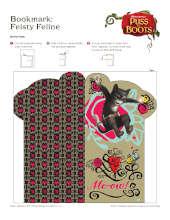
 .pdf file (482 KB)
.pdf file (482 KB)(Guapo Gato)
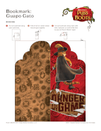
.pdf file (407 KB)(Little Romancer)
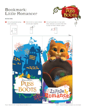
.pdf file (337 KB)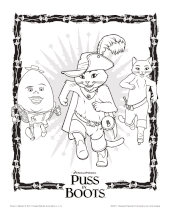
.pdf file (1.21 MB)Puss in Boots
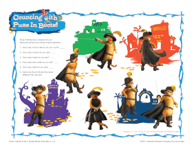
.pdf file (675 KB)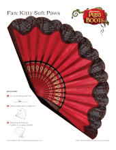
.pdf file (557 KB)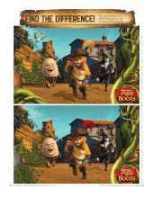
.pdf file (954 KB)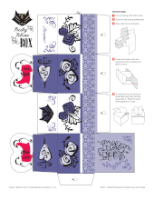
.pdf file (279 KB)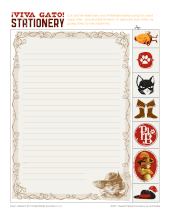
.pdf file (1.39 MB)(collab with McDonald's)
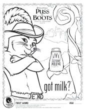
.pdf file (364 KB)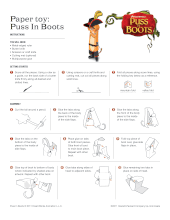
.pdf file (1.13 MB)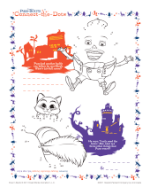
.pdf file (951 KB)